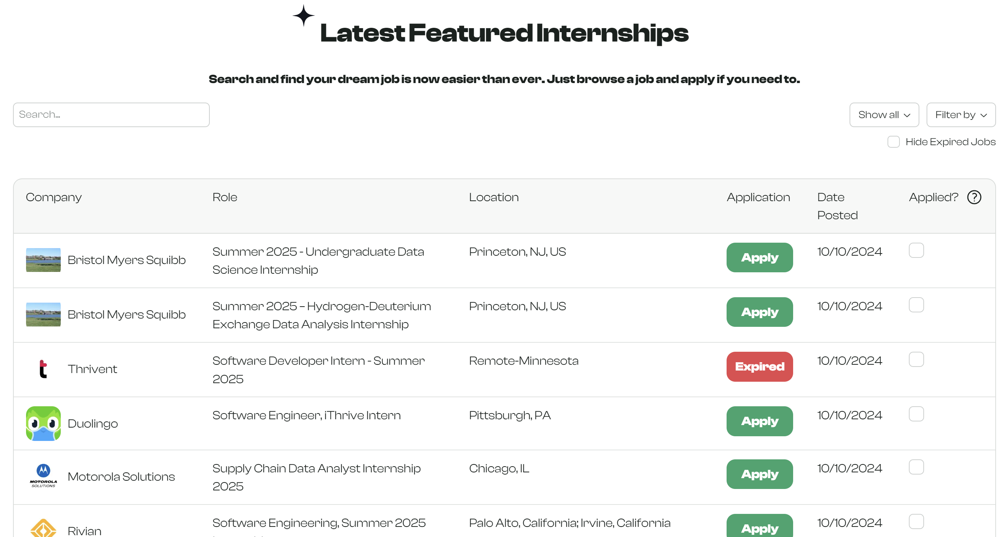
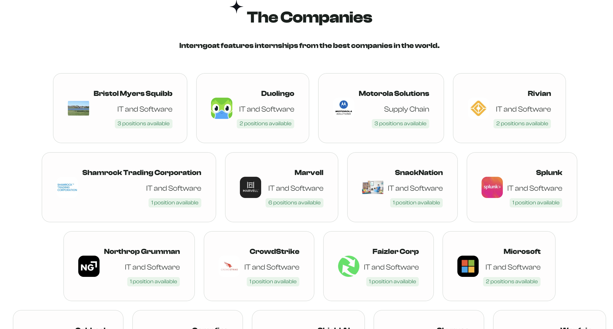
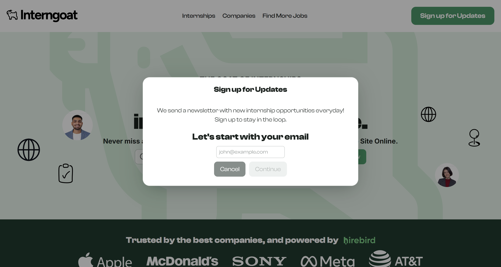
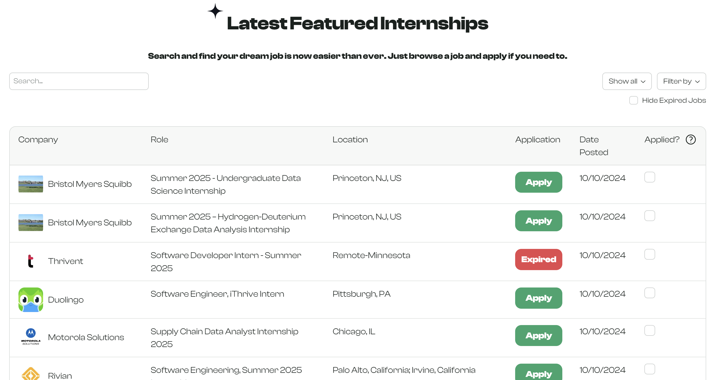
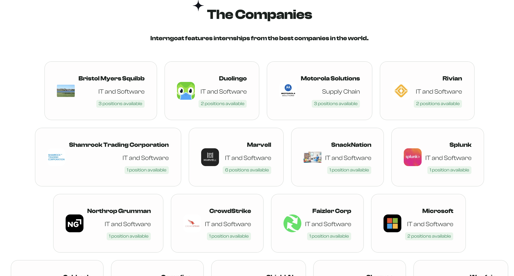
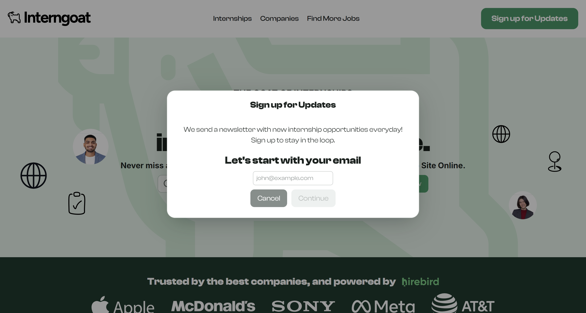

About This Project
Interngoat was created as a spinoff of Hirebird, a startup company helping students and professionals find entry level jobs.
The purpose of the site was to scrape and consolidate internships from all industries into one place, for users to view in a list or receive daily newsletters for their preferences.
The site is completely automated using AI and Puppeteer for the scraping and running on a daily clock.
Skills Used
- Next.js
- Puppeteer
- Systems Design
- Neo4j
- OpenAI
- TypeScript
- Web Scraping
- Panda CSS